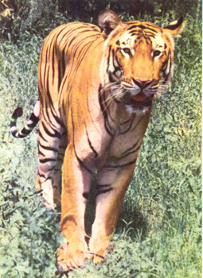
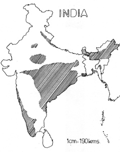

|
Digitized
Inventory of Animal Resources: Mammalia |
Panthera tigris tigris (Linnaeus)
Taxonomic
Details
----- Scientific Name
----- Classification
----- Synonyms
----- Common Names
Other
Biological Details
----- Habit and
Habitat
----- Distribution
---------- Extend of
Occurrence
---------- Area of
occurrence
---------- Altitude
---------- Population
-----
Conservation Status
-----
Diagnostic
Features
-----
Breeding system
Miscellaneous
Information
Literature
Scientific Name : Panthera tigris tigris (Linnaeus)
Classification:
Synonyms: Felis tigiris, Linnaeus and number of synonyms as
reported by Alfred et al.(2002)
Common Names: Tiger, Indian Tiger,
Royal Bengal Tiger
Regional Names: Hindi: Sher,
Bagh; Benagali/Assamese: Bagh; Marathi: Pateri Vagh, Dhanya Vagh; Telugu: Pedda
puli; Tamil: Vengai puli; Malayalam: Kaduwra, Naaree; Kannada: Huli; Orryia :
Bagha.
Threats: Interspecific
Competition, Habitat Fragmentation, Human Interference, Loss of Habitat, Trade ,
Hunting, Decline in prey species, Genetic problems like breeding, Corridor loss,
Poaching and hybridization due to mixing with zoo population. Human encroachment
in Tiger areas etc.; Effect of
threats on population (Perceived or inferred): Declining
Trade: Local and
International; Parts in trade: Skin,
Bones, Live animals, Fur, Organs, Body Parts, whiskers, claws etc.(Pradhan,
1997; Menon and Kumar,1999). ; Effect
of trade on population (Perceived or inferred): Declining
Tiger has been
reported from variety of habitats like open Jungle, Thorny, Riverine, Dry and
moist deciduous, Semi evergreen, evergreen, mangrove and swampy forests. It also
seen using tall grass, grassland-scrub mosaic and high altitude habitats. It
avoids hot and cold deserts.
Tiger is generally a
solitary hunter and attacks all kinds of animals including live stock. However,
remarkable tolerance to variations in altitude , temperature and rainfall is
shown by tiger. Tiger, when unable to kill its natural prey, it becomes man-eater
for its survival. It is endowed with excellent swimming skills. It hunts between
sunset and dawn and covers long distances in the course of night hunting. It
prefers to hunt large deer, preferably sambar, if available. Tiger is quite
adaptable and can survive on smaller prey. Though hunt at night, tiger is
cryptic in habit. It undertakes long distance migration in search of food. Like
other cats , it marks its territory and defends its home range.
Tiger is enormously
powerful and all kinds of animals fall victim of its prey. It mates after rains
and the cubs, usually 2-6 , are born in Feb- May. Cubs are looked after by tigress
till they are capable of killing its own prey. Sighting of a tiger family is not
uncommon during this period. Sexual maturity is attained at 3-4 yrs of age in
tigers. Availability of surface water and shade seem to be important factors for
thermoregulation. Vulnerability of tiger densities may correlate to vegetation
cover also in addition to the prey densities. Tigers communicate through scent
markings, Vocalization and visual markers such as faecal deposits.
Habitat Structure: Prefers to live
in variety of habitat excluding hot and cold deserts. The Habitat structure is
definitely changing. It is decreasing with general decline.
Tiger occurs in many
parts of Asia, but it is better known from India. It is found practically
throughout India except in the North Western Regions of hot and cold deserts.
Though the distribution is throughout the country the populations are found only
in favourable pockets.
No. of Locations: Many; Type: Fragmented
Extend of Occurrence
greater than 20000
sq.kms.
Area of occurrence: greater than 2001 sq.kms.
Altitude:
0-3600 m
Population:
Global Population: 4000-5000,
while Regional Population: 3000-4000; No.
of mature individuals in all the
populations: less than 2500
Captive Population: Males: 98 + Females: 118 = Total: 226 in Indian Zoos; Males: 146 +
Females: 168 + Unsexed: 1 = Total: 315 in 64 Zoos abroad (CAMP Report, 1998).
Life span: (Wild): 20
years (Prater, 1980); (Captivity): 25 years
Population Trend: Increasing steadily.
Conservation status: Non-Endemic Endangered
CITES APPENDIX: I ; Indian
Wildlife (Protection) Act (1972) (As amended
up to
2002): Schedule I; Part I; Indian
Red Data Book (IUCN, 1994): Vulnerable; IUCN
(1998) (Proposed): Endangered (national) and Data Deficient (Global); IUCN (2002) (Proposed): Endangered (Global) based on version
3.1 2001 (IUCN, 2003).
Tiger is a large cat
with majestic appearance and graceful built. It is well known and undoubtedly
most charismatic animal of India and needs least introduction. It possesses rich
reddish yellow to orange rufous coat with short but coarse and dense fur. The
coat is marked with characteristic black stripes on the body and the black
ringed tail. Ventrally it is white . Ears short and round and black on the
backside with a prominent white spot. Tail long with rings and a black tip.
Forelimbs more powerful than hind limbs. Foot pads large. Females smaller in
size. Albinistic forms, though very rare , have also been reported.
Measurements: (In cm): Head
and Body Length: 140.00 -300.0; Tail Length: 60.0-110.0; Hind foot: 30.0-40.0;
Height at Shoulders: 95.0 110.0.
Weight: (In Kg): 135.0- 230.0.
Intraspecific variations: Out of six subspecies described from this region, only one namely Panthera tigiris tigris, (Linnaeus) is known to occur in India.
Museum Records:
Name
of Museum: Some of the Regional Stations and Head Quaters of Zoological
Survey Of India and Bombay Natural History Society, possess representative
specimens of this species in thier collections.
Sighting Records: Type of Sighting: Direct and Indirect; Field Notes: Number of sighting in wild records are from different places in India have been reported by number of workers. Excellent work on observations on prey-predators (Including tiger) in India has been reported by Johnsingh (1983), Rice (1986) and Karanth and Sunquist (1995). Account on paoching and illegal trade of tiger skins and body parts is also available (Pradhan, 1997). Karnath (1987, 1991) and Karnath and Nichols (2000) have reported detailed account on ecological , management and conservation studies of tiger population in Tropical Asia including India.
Taxon related studies recommended: In-situ Survey, monitoring, Habitat
management, Conservation
strategy Recommended, Population census studies and trade data reporting from
time to time.
Remarks: The tiger population is still under constant threat of poaching and illegal trade and hence, it needs complete protection. Studies have been carried out in the management of Tiger population within its distributional range (Karanth, 1987). Further active implementation of management of tiger population programme is essential. Active involvement of public in the awareness programms is also equally necessary.
 
Map Source: Karanth(2000) and
Menon (2003)
Alfred,
J.R.B.; Sinha, N. K. and Chakraborty, S. 2002 Checklist of Mammals of
India Rec. Zool. surv. India. Occ.
Paper No. 199: 289pp.
Anonymous. 1994 The
Red Data Book on Indian Animals: Part–I Vertebrata 534pp. Publisher: Director,
Zoological Survey of India, Kolkata.
Johnsingh, A. J. T. 1986 Diversity and Conservation of Carnivorous
Mammals in India Proc. Indian Acad.
Sci. (Anim.Sci./Plant Sci.) Suppl. Nov. 1986: 73-89.
Johnsingh, A. J. T. 1983 Large Mammalian prey-preadators in Bandipur
J. Bombay nat. Hist.Soc.80:(1): 1-49.
Karanth, K. U. 1991 Ecology and Management of the Tiger in tropical
Asia in Wildlife
Conservation : Present Trends and Perspectives for the 21st Century 156-159. Publisher: Japan
Wildlife Research Centre, Tokyo. Editors: Maruyama, N.; Bobek, B,; Ono, Y.;
Regelin, W.; Bartos, L. and Ratcliffe, R.
Karanth, K. U. and Nichols, J. D. 2000 Ecological Status and Conservation of Tigers in India 124pp. Publisher: Final
Technical Report to the Division of International Conservation, US Fish and
Wildlife Services, Washington D. C. and Wildlife Conservation Society , New
York. Centre for Wildlife Studies, Bangalore, India.
Karanth, K. U. and Sunquist, M. E. 1995 Prey selection by Tiger, Leopard
and Dhole in tropical forests Journal
of Animal Ecology 64 : 439-450.
Karnath, K. U. 1987 Tigers in India: A Critical Review of Field
Censuses in Tigers
of the World 118-132. Publisher: Noyes Publications, Park
Ridge, Editors: Tilson, R. L. and Seal, U.S.
Menon, V. 2003 A Field Guide to
Indian Mammals 200pp. Publisher: Dorling Kindersley (India)
Pvt.Ltd.
Menon, V. and Kumar, A. 1999 Wildlife
Crime : An Enforcement Guide (Second edition) 110pp. Publisher: Wildlife
Protraction Society of India, New Delhi.
Molur, S.; Nameer, P. O. and Walker, S. 1998 Report of the Workshop “ Conservation Assessment and Management Plan
for Mammals of India.” (BCPP- Endangered Species Project) 176pp.
Publisher: Zoo Outreach Organisation, Conservation Breeding Specialist
Group India, Coimbatore, India.
Pradhan, M. S. 1997 Illicit trade in Wildlife species, products and
derivatives in Maharashtra State Rec.
Zool. surv. India 96: (1-4): 195-210.
Prater, S. H. 1980 The Book of
Indian Animals 324pp. Publisher: Bombay Natural History
Society, Mumbai.
Rice, C. G. 1986 Observations on predators and prey at Eravikulam
National Park, Kerala J. Bombay nat.
Hist. Soc. 83 : (2): 283-305.
Tikader, B. K. 1983 Threatened
Animals of India 307pp. Publisher: Director, Zoological
Survey of India, Kolkata.